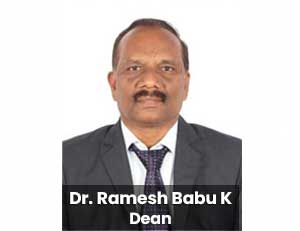

The mission of the School is to strive persistently for achieving excellence in computing disciplines. It is being pursued through its spectrum of academic programmes in computing of contemporary standards. The main aim is to produce computing graduates with potential, to design and develop systems involving the integration of software and hardware devices, employ innovative approaches in programming and problem solving and solving problems, create Large Scale Software Systems and build data/computing infrastructure for an organization.

With an objective of developing core competence in the respective subject matter specialisations and special interest groups for learning newer technologies, the School has formed the following technical departments:
- Department of Analytics
- Department of Computational Intelligence
- Department of Database Systems
- Department of Software Systems
- Department of Information Security
- Department of IoT
UG |
PG |
|---|---|
| B.Tech. Computer Science and Engineering | M.Tech. Computer Science and Engineering |
| B.Tech. Computer Science and Engineering with Specialisation in Bioinformatics | M.Tech. Computer Science and Engineering with Specialisation in Big Data Analytics |
| B.Tech. Computer Science and Engineering with Specialisation in Information Security | M.Tech. Computer Science and Engineering with Specialisation in Information Security |
| B.Tech. Computer Science and Engineering and Business systems (in collaboration with TCS) | M.Tech. Computer Science Engineering with Specialisation in Artificial Intelligence and Machine learning |
| B.Tech. Computer Science and Engineering with Specialisation in IoT | M. Tech. Computer Science and Engineering with Specialisation in Data Science – 5 year Integrated |
| B.Tech. Computer Science and Engineering with Specialisation in Data Science | M. Tech. Computer Science and Engineering - 5 year Integrated [In Collaboration with Virtusa] |
| B.Tech. Computer Science and Engineering with Specialisation in Blockchain Technology |

Welcome to the School of Computer Science and Engineering (SCOPE) at Vellore Institute of Technology, Vellore. I am privileged to have served as dean since March 2021.
Our school provides special opportunities for students to participate in global exchanges, joint projects, research collaborations, and technical events.
We are committed to excellence through innovations in the teaching and learning process, challenging research projects, and developing new technologies that help advance the country and the world. We have been successful in maintaining good student enrolments while maintaining high academic standards. Our faculty are highly qualified, committed, and experienced, and we admit some of the best students in the country in Computer Science and Engineering. Our faculty and staff are committed to remaining technically current and providing a world-class education to our students.